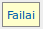

į pradžią Turinys
Užduotys
Atsakingas už užduočių vykdymą padalinio asmuo mato tik (jeigu kitaip nenurodyta sistemos nustatymuose) savo padaliniui skirtas užduotis ir šiame registre užpildo duomenis, susijusiu su užduoties vykdymu.
Registras atverčiamas iš užduočių lentos (jei yra aprašyta) pasirinkus „Veikla – Užuotys“, arba iš lentelių sąrašo, esančio sisteminiame meniu pasirinkus „Užduotys“.Lentelės rodinyje matyti:
- Data, laikas – įvedimo data, laikas. Tai data ir laikas, kada naudotojas, įvedęs užduotį/užregistravęs gedimą į užduočių registrą, pasirinko „Pateikta“ – „Taip“.
- Pateikė – įrašą į užduočių registrą įvedusio naudotojo vardas, pavardė.
- Nuo – padalinio, kuris registruoja gedimą, teikia užduotį, pavadinimas.
- Kam – padalinio, kuriam skirta užduotis, pavadinimas.
- Atsakingas – už užduoties vykdymą atsakingas asmuo.
- Terminas – pageidaujamas užduoties įvykdymo/gedimo pašalinimo terminas.
- Užduotis – užduoties aprašymas.
- Būsena – užduoties būsena:
- Pateikta – užduotis pateikta padaliniui, bet nepriimta vykdymui
- Priimta – užduotis perskaityta, atsakingas už už užduoties vykdymą pažymėjo, kad užduotį gavo
- Atmesta – užduotis nevykdoma, atmesta
- Atsakymas – užduoties atmetimo priežastis, užduoties vykdymo eiga, užduoties vykdytojo komentarai.
- Užduotis baigta? – Taip/Ne. Jeigu užduotis įvykdyta, naudotojas, atsakingas už užduoties vykdymą, pažymi „Pabaigta“ „Taip“.
- Pabaigta – užduoties pabaigimo data ir laikas
- Pakeista – įrašo pakeitimo data, laikas.
- Pakeitė – įrašą pakeitusio naudotojo vardas.
- Paskutinis nurašymas – data, kada buvo suformuotas paskutinis resursų nurašymo dokumentas šiai užduočiai. Jeigu resursų nėra, paskutinio nurašymo data = užduoties registravimo (įvedimo) data.
Galima atlikti šiuos veiksmus:
 Įterpti užduoties įrašą.
Įterpti užduoties įrašą.  Naikinti užduoties įrašą.
Naikinti užduoties įrašą. Redaguoti užduoties įrašą.
Redaguoti užduoties įrašą. Peržiūrėti užduoties įrašą.
Peržiūrėti užduoties įrašą. Filtruoti užduočių įrašus
Filtruoti užduočių įrašus- Rikiuoti užduočių/žurnalo įrašus
 Spausdinti ataskaitas, kurios susijusios su šiuo registru ir aprašytos ataskaitų konstruktoriuje
Spausdinti ataskaitas, kurios susijusios su šiuo registru ir aprašytos ataskaitų konstruktoriuje Pagal įvestus resursus, sunaudotus užduoties vykdymui, suformuoti resursų nurašymo dokumentą.
Pagal įvestus resursus, sunaudotus užduoties vykdymui, suformuoti resursų nurašymo dokumentą.
Taip pat šiame registre (atvertus įrašo formą peržiūrai arba redagavimui) rodoma ir redaguojama susijusi informacija apie užduotį/gedimą:
- Užduočių registras – užduočių registro/gedimų žurnalo įrašas užduočiai.
- Užduočių resursai – resursai (medžiagos), sunaudotos vykdant užduotį.
- Užduočių vykdytojai – darbuotojai, paskirti vykdyti užduotį.
- Failai – su užduoties vykdymu susiję failai.
Įterpti naują užduoties įrašą
 Tiesiogiai įterpti naujo užduoties įrašo negalima. Užduotys registruojamos ir gedimų
žurnalas pildomas užduočių registre/gedimų žurnale
Tiesiogiai įterpti naujo užduoties įrašo negalima. Užduotys registruojamos ir gedimų
žurnalas pildomas užduočių registre/gedimų žurnale
Redaguoti užduočių registro įrašą
- Pažymėti norimą redaguoti įrašą.
- Spausti lentelės antraštėje.
- Atsiverčia įrašo redagavimo forma.
-
Jeigu įterpiant ar redaguojant užduoties/gedimo įrašą laukelis Pabaigta buvo pasirinktas
„Taip“, įrašas neredaguojamas, bet galima redaguoti susijusiu duomenis: užduočių vykdytojai,
užduočių resursai, failai ir peržiūrėti užduoties registro įrašą.
- Formoje užpildomi laukeliai:
- Reg. Nr. – užduočių registro Nr. Užpildomas automatiškai įterpiant užduočių registro/ gedimų žurnalo įrašą;
- Užduoties Nr. – Užpildomas automatiškai;
- Data, laikas – Užduoties registravimo data, laikas. Užpildomas automatiškai įterpiant užduočių registro/gedimų žurnalo įrašą;
- Pateikė – naudotojo, užregistravusio užduotį, vardas, pavardė. Užpildo naudotojas, įterpdamas užduočių registro/gedimų žurnalo įrašą;
- Nuo – padalinio, pateikusio užduotį, pavadinimas. Užpildo naudotojas, įterpdamas užduočių registro/gedimų žurnalo įrašą;
- Kam – kuriam padaliniui skirta užduotis. Užpildo naudotojas, įterpdamas užduočių registro/gedimų žurnalo įrašą. Jeigu pvz. naudotojas pateikė užduotį ne tam padaliniui, padalinį galima pakeisti. Pasirinkti iš sąrašo;
- Atsakingas – už užduoties vykdymą atsakingo asmens vardas, pavardė. Atsakingo asmens vardas ir pavardė užpildoma automatiškai, registruojant užduotį/gedimą. Jeigu pvz. naudotojas pateikė užduotį ne tam padaliniui arba už užduoties vykdymą atsako kitas asmuo, atsakingo asmens pavardę galima pakeisti. Pasirinkti iš sąrašo;
- Terminas – per kiek laiko naudotojas, užregistravęs užduotį/gedimą, pageidauja, kad užduotis būtų įvykdyta;
- Užduotis – užduoties aprašymas. Pvz. „pakeisti el. lemputę 111 kb.“. Užpildo naudotojas, įterpdamas užduočių registro/gedimų žurnalo įrašą;
- Būsena – užduoties būsena:
- Pateikta – užduotis pateikta padaliniui, bet nepriimta vykdymui
- Priimta – užduotis perskaityta. Atsakingas už už užduoties vykdymą asmuo, perskaitęs užduotį pažymi „Priimta“.
- Atmesta – užduotis nevykdoma, atmesta
- Atsakymas – užduoties vykdymo aprašymas, jeigu užduotis atmesta – atmetimo priežastis;
- Pastaba – bet koks tekstas. Gali likti tuščia;
- Užduotis baigta – „Taip“, jeigu užduotis baigta, „Ne“, jeigu dar vyksta. Užpildo atsakingas už užduoties vykdymą asmuo;
- Pabaigta – užduoties pabaigimo data, laikas – kada asmuo, atsakingas už užduoties vykdymą pažymėjo „Užduotis baigta“ – „Taip“, arba galima įvesti užduoties pabaigimo datą. Datos ir laiko formatas „YYYY MM DD HH:MM:SS“, arba „YYYY-MM-DD HH:MM:SS“, arba „YYYYMMDD HH:MM:SS“. Jeigu praleidžiamos valanda, minutės, sekundės, laikas bus „00:00:00“;
- Pakeista – įrašo pakeitimo data, laikas. Užpildomas automatiškai;
- Pakeitė – įrašą pakeitusio naudotojo vardas. Užpildomas automatiškai;
- Paskutinis nurašymas – data, kada buvo suformuotas paskutinis resursų nurašymo dokumentas šiai užduočiai. Jeigu resursų nėra, paskutinio nurašymo data = užduoties registravimo (įvedimo) data.
- Paspaudus duomenys išsaugomi, forma užverčiama.
- Paspaudus duomenys neišsaugomi, forma užverčiama.
- Galima peržiūrėti
užduočių registro/gedimų žurnalo įrašus:
- Galima peržiūrėti ir redaguoti užduoties vykdymui
sunaudotus resursus:
- Galima peržiūrėti ir redaguoti užduoties vykdymui paskirtus
vykdytojus (darbuotojus):
- Galima peržiūrėti prie užduoties prisegtus
failus:
- 


Naikinti užduoties įrašą
- Pažymėti norimą panaikinti įrašą.
- Spausti lentelės antraštėje.
- Atsiverčia įrašo naikinimo forma.
-
Jeigu užduoties įrašo laukelis Pabaigta buvo pasirinktas „Taip“, įrašo panaikinti negalima
- Paspaudus įrašas panaikinamas, forma užverčiama.
- Paspaudus įrašas nepanaikinamas, forma užverčiama.
Peržiūrėti užduoties įrašą
- Pažymėti norimą peržiūrėti įrašą.
- Spausti lentelės antraštėje.
- Atsiverčia įrašo peržiūros forma. Forma tokia pati, kaip ir redagavimo
- Galima peržiūrėti susijusias lenteles
- Paspaudus , forma užverčiama.
Suformuoti nurašymo dokumentą
- Pažymėti įrašą, kuriam reikia suformuoti resursų nurašymo dokumentą.
- Spausti lentelės antraštėje.
- Jeigu yra įvesti resursai į užduočių resursų registrą, suformuojamas nepatvirtintas nurašymo dokumentas, žr. „Prekės“ – „Vidaus apyvartos dokumentai“.